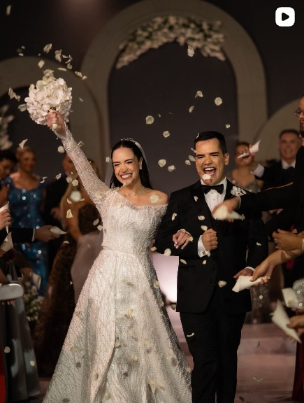
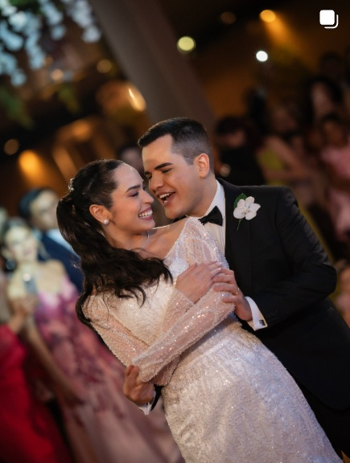
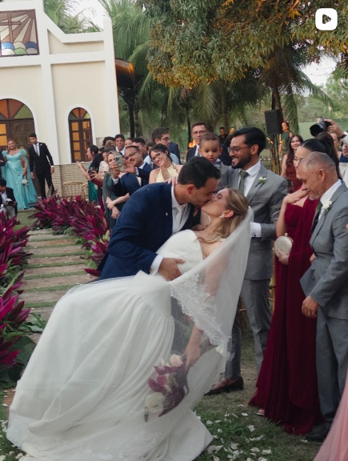
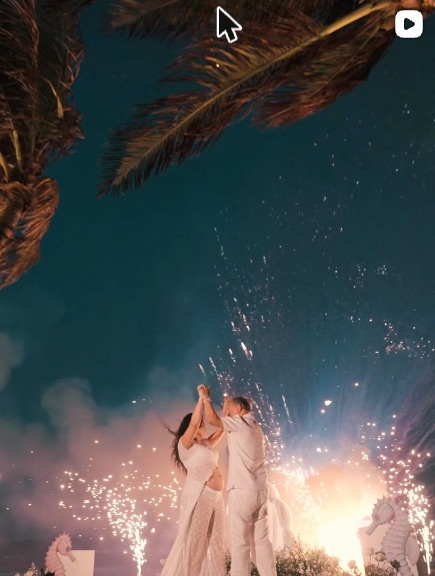
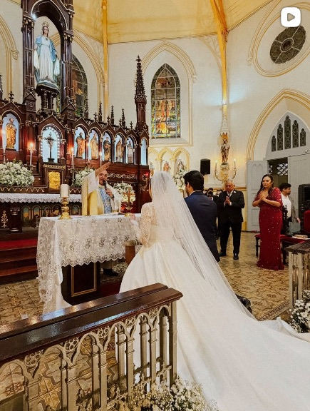
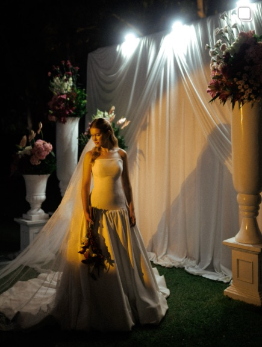

Casamentos, 15 anos e celebrações com uma cerimonialista que ama o que faz. Do planejamento ao último convidado, a Ariany e a equipe cuidam de cada detalhe para vocês só aproveitarem.


Você precisa amar o que faz para trabalhar com casamentos.
Ariany Costa, no Instagram
Festa bonita começa muito antes do grande dia. O cerimonial acompanha cada etapa para que nada fique solto.
Vocês contam o sonho, a data e o estilo. A partir daí, cada próximo passo ganha ordem e prazo.
Decoração, buffet, foto, música e banda seguindo o mesmo roteiro, com a cerimonialista no comando.
Entradas, horários e imprevistos nas mãos da Ariany e da equipe. Para vocês, só sobra viver a festa.
Alguns dias que passaram pelas mãos da Ariany e da equipe.




Cinco perguntas rápidas e você recebe um resumo com cronograma sugerido. No final, é só enviar para o WhatsApp da Ariany.
O atendimento é presencial, no Casa Shopping. Traga suas ideias, fotos de inspiração e a data que vocês têm em mente.